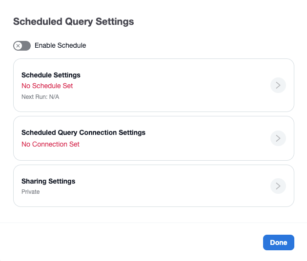
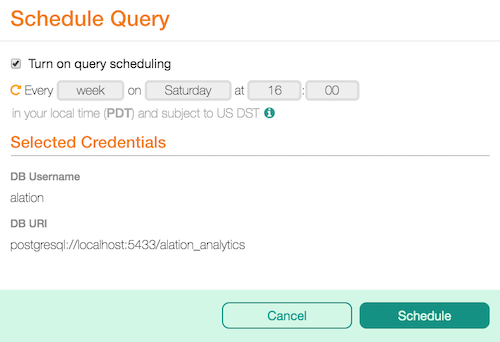
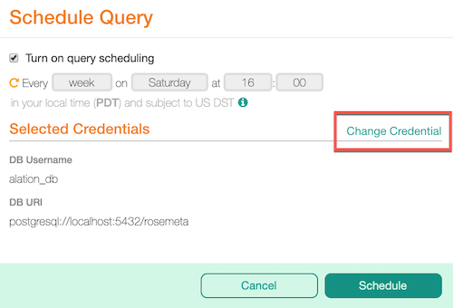
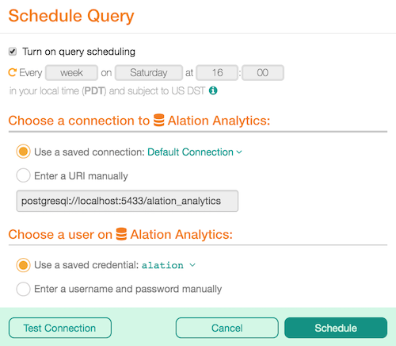

Schedule Queries¶
Alation Cloud Service Applies to Alation Cloud Service instances of Alation
Customer Managed Applies to customer-managed instances of Alation
You can schedule a query to run automatically on a regular basis. At the specified times, the query will automatically execute and generate a new results page.
This feature can be enabled or disabled by a Server Admin. See Enable or Disable Query Scheduling for instructions.
Starting in 2022.2, the latest results of the scheduled query will always be available at a persistent link. In addition, you can share this persistent link with individual users and groups.
Starting in 2023.1, Server Admins can manage all scheduled queries using a dedicated dashboard. See Manage Scheduled Queries for details.
Prerequisites for Scheduling a Query¶
To schedule a query, certain prerequisites must be met:
Only the query owner can set up the query’s schedule. Owners and Server Admins can change or disable the schedule once it’s set up. Users designated as query authors can view the schedule but can’t change it.
Queries must be published before they can be scheduled. If you edit a scheduled query without publishing the change, only the latest published version will run on the schedule. If you unpublish a scheduled query, the schedule will be disabled.
You can’t schedule queries if transient credentials are enabled. With transient credentials, Alation doesn’t store your data source credentials. This makes it so you have to enter your credentials every time a query is run.
Effect of Time Zones on Scheduled Queries¶
Times are shown according to your local time as determined by your browser and operating system but stored on our server subject to the Daylight Savings Time policies in effect for most of North America, namely the United States, Canada, and several island nations, including Bermuda and Cuba.
The implication of this is that on the second Sunday in March, the server clock will be advanced by one hour. On the first Sunday in November, the server clock will be reverted back one hour.
Schedule a Query¶
The process for scheduling a query changed significantly in 2022.2. Follow the instructions for your version below.
Schedule a Query in 2022.2 and Later¶
Step 1: Enable the Query’s Schedule¶
Open the query in Compose.
In the toolbar, click the Schedule button.
Note
If the button is disabled:
You may need to publish the query. Only published queries can be scheduled.
You may not be the owner of the query. To check if you are the owner, in Compose click the More button, then click Query Access and see if you have “Owner” to the right of your name. If you aren’t the owner, you can ask the owner to schedule it or clone the query and then schedule the clone.
Your administrator may have enabled transient credentials. You can’t schedule queries when transient credentials is enabled.
The Scheduled Query Settings dialog opens.
Click the Enable Schedule toggle. This enables the Schedule Settings section.
{kind=link}
Step 2: Define the Schedule¶
Click the arrow in the Schedule Settings section.
Choose whether you want to use the simple or advanced scheduler:
Simple Scheduler—You can choose to run the query:
Hourly at a chosen minute within the hour
Daily at a chosen time of day
Weekly on a chosen day of the week and time of day
Monthly on a chosen date and time
Advanced Scheduler—You can define a complex schedule using a cron expression. See Cron Expressions for help writing a cron expression. Once you’ve entered an expression, click Preview Schedule to see a plain English explanation of the expression.
Important
A query schedule that’s too frequent may impact system performance. We recommend that the time between the query’s runs should be at least double the query’s average execution time.
Click the Save button when you’re done setting the schedule.
Step 3: Enter the Connection Settings¶
Click the arrow in the Scheduled Query Connection Settings section.
Choose a connection and user credentials the scheduled query will use to authenticate against the data source whenever it runs. For help setting your connection, see Working with Data Source Connections.
Click the Save button when you’re done setting the connection. Compose will verify that the connection and credentials work. If there’s a problem connecting, you’ll have to update the connection information.
Step 5: Save the Schedule¶
Click Done to save the schedule settings.
Schedule a Query in 2022.1 and Earlier¶
Open your query in Compose.
On the toolbar, click Schedule. This will open the Schedule Query dialog. The Schedule button will only be enabled if the query is published:
The Turn on query scheduling checkbox is selected by default. Proceed to select values in the frequency, day and time fields.
Check the connection parameters in the Selected Credentials section. If you want to change them for the scheduled run, hover over Selected Credentials title to reveal the Change Credentials link and click it to open the connection parameters:
Under Choose a connection to <Data Source> and Choose a user on <Data Source>, specify the connection parameters for this scheduled run:
Click Test Connection to make sure the connection parameters you provided are valid.
Click Schedule to apply the schedule to the query. Note that the Schedule button has changed to Scheduled.
View the Current Schedule¶
Anyone with access to Compose can view a query’s schedule.
Open the query in Compose.
Hover over the Scheduled button. A popup will display the query’s current schedule.
Edit or Disable the Schedule¶
To edit or disable the schedule in 2022.2 and earlier:
Open the query in Compose.
On the Compose toolbar, click the Scheduled button. The Scheduled Query Settings dialog appears.
To disable the schedule, click the Enable Schedule toggle at the top of the dialog. Disabling the schedule will prevent the query from running automatically in the future, but will not stop the query if it is already in the process of executing.
To edit the schedule, click the arrow in the Schedule Settings section. Set up your desired schedule by selecting options from the provided menus, then click Save.
To edit the connection settings the scheduled query will use, click the arrow in the Scheduled Query Connection Settings section. For help setting your connection, see Working with Data Source Connections. Click Save when you’re done.
To edit the sharing settings, click the arrow in the Sharing Settings section. Change the settings as desired, then click Save.
When you’re finished, click the Done button.
To edit or disable the schedule in 2022.1 and later:
Open the query in Compose.
On the Compose toolbar, click the Scheduled button. The Schedule Query dialog appears.
To disable the schedule, clear the Turn on query scheduling checkbox.
To edit the previous schedule, select the new frequency, day, and time values.
To edit the connection settings the scheduled query will use, edit the Choose a connection and Choose a user sections.
Click Save.
View Your Scheduled Queries¶
You can see all scheduled queries you own in Compose.
Open Compose.
Click the Compose menu on the top left of the page.
Click Open Query.
Click Scheduled. You’ll see a list of all scheduled queries you own.
You can now use the provided buttons on the bottom right of the page to open the query in Compose, clone the query, add it to a group, or discard it.
Cron Expressions¶
This section gives a brief introduction to writing cron expressions for Compose’s advanced scheduler. Cron was originally a utility developed for Unix-like systems to enable tasks to run on a schedule. There are now many implementations of cron. Compose uses an implementation developed by Celery. This implementation is more limited than many others but still provides a lot of power.
Cron expressions let you define complex schedules such as:
Every Monday and Friday at 2am and 4am
Twice a month on the 1st and 15th
Every three hours on the weekends
The Expression¶
Each cron expression consists of five fields separated by a space. Each field specifies a different aspect of the schedule.
<minutes> <hours> <days-of-the-month> <months> <days-of-the-week>
As an example, the following cron expression would run at 12:30pm on the first day of every month.
30 12 1 * *
The Fields¶
The fields are described in the following table.
Field |
Allowed Values |
Allowed Special Characters |
|---|---|---|
Minutes |
|
|
Hours |
|
|
Days of the Month |
|
|
Months |
|
|
Days of the Week |
|
|
Special Characters¶
The special characters let you enter lists, ranges, wildcards, and increments in your cron expression. The special characters are described in the following table.
Special Character |
Purpose |
|---|---|
|
Specifies a list of values. |
|
Specifies a range of values. |
|
Specifies all possible values for a field. |
|
Specifies every X increments of the given field. For example, 5/15 in the minute field means minutes 5, 20, 35, and 50. |
Examples¶
Here are some more examples to help illustrate some of the syntax of cron expressions.
Example 1
Let’s say you want a query to run twice a month at 2:15am. You could use this cron expression:
15 2 1,15 * *
This cron expression will run at minute 15 of the second hour of the day, on the first and fifteenth days of the month, every month, on any day of the week.
Example 2
Let’s say you want a query to run every three hours on weekdays. You could use this cron expression:
0 */3 * * MON-FRI
This cron expression will run at minute 0 every 3 hours, on any day of the month, every month, Monday through Friday.